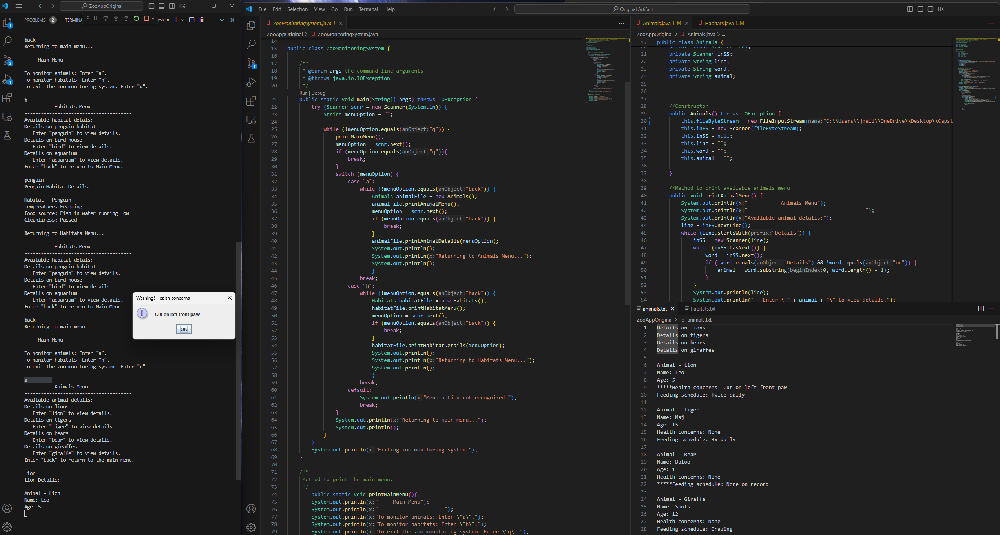
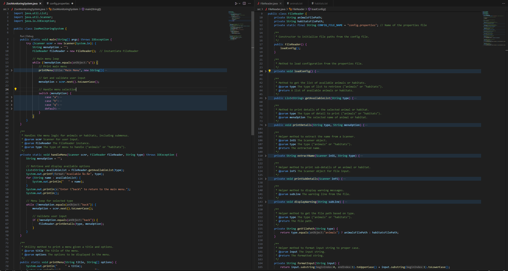

Joshua Rodriguez
CS499: Computer Science Capstone
Southern New Hampshire University
Welcome
This ePortfolio showcases the knowledge and skills I've cultivated throughout my journey in the Computer Science program at Southern New Hampshire University (SNHU), reflecting my growth and development.
Professional Self-Assessment
My journey through the Computer Science program has been transformative, equipping me with the knowledge and skills necessary to thrive in the dynamic field of computer science. This capstone project and the development of my ePortfolio have been integral in showcasing my strengths, shaping my professional goals, and preparing me to enter the workforce with confidence.
Throughout the program, I had the opportunity to engage with a wide range of subjects that are critical to the field of computer science. One of the most valuable experiences was collaborating in team environments, where I learned to communicate effectively with team members and simulated stakeholders, ensuring that project requirements were met while also maintaining the quality of the final deliverables. This experience has taught me the importance of clear communication and collaboration in achieving successful outcomes, skills that I will carry with me into my professional career.
My coursework also provided me with a deep understanding of data structures and algorithms, which are the backbone of efficient software development. For instance, in one of my projects, I implemented complex algorithms to optimize performance, demonstrating my ability to apply theoretical knowledge to real-world scenarios. This experience has solidified my problem-solving skills and my ability to think critically, both of which are essential in the field of computer science.
Software engineering and database management were also key components of my education. I gained hands-on experience with software design principles, version control, and database integration. Through various projects, I have learned to develop robust and scalable applications, ensuring that they are secure and efficient. My capstone project, in particular, allowed me to showcase my ability to integrate these skills, as I enhanced a Zoo Monitoring System using Android Studio and Firebase for database setup and authentication. This project not only demonstrated my technical abilities but also my commitment to creating secure and user-friendly applications.
Security has always been a top priority in my projects. Understanding the importance of protecting user data and maintaining system integrity, I have consistently implemented best practices for secure coding and data management. This security mindset has been a recurring theme throughout my coursework and is something that I will continue to prioritize in my professional work.
One of the most exciting aspects of my education has been learning multiple coding languages, including Kotlin, Java, Python, and SQL. This versatility has allowed me to adapt to different programming environments and development processes, making me a well-rounded developer. I have also embraced industry-standard practices, such as Agile methodologies and test-driven development, which have further refined my approach to software engineering.
The artifacts in my ePortfolio are a reflection of the diverse skill set I have developed throughout the program. Each artifact was chosen to highlight a specific area of expertise, from software engineering and design to algorithms and data structures, and databases. Together, they demonstrate the full range of my computer science talents and abilities.
In summary, my ePortfolio not only showcases my technical skills but also reflects my growth as a professional in the field of computer science. The capstone project, in particular, serves as a culmination of my learning, illustrating my ability to tackle complex problems, work collaboratively, and deliver high-quality solutions. As I move forward in my career, I am confident that the knowledge, skills, and experience I have gained will serve as a strong foundation for success in the ever-evolving world of technology.
Project Outline
The primary goal of this project is to showcase the depth of my expertise in Computer Science and Android Studio Development by enhancing the Zoo Monitoring System artifact. This process will be conducted in a structured sequence, ensuring that each phase builds upon the previous one to achieve a comprehensive and professional outcome.
Phase 1: Code Review
The project begins with an in-depth code review to evaluate the existing functionality of the program, identify areas for improvement, and ensure adherence to best practices. This step is crucial for laying a solid foundation for the subsequent enhancement plan.
Phase 2: Enhancement Plan
Based on the findings from the code review, a detailed enhancement plan will be developed. This plan will focus on three critical areas:
- Software Engineering and Design
- Algorithms and Data Structures
- Databases
Phase 3: Implementation of Enhancements
With the enhancement plan in place, the artifact will undergo progressive improvements. These enhancements will be systematically implemented, ensuring that each aspect of the artifact is optimized for performance, usability, and security.
Phase 4: Course Outcome Discussion
Finally, the project will conclude with a discussion of how the completed enhancements demonstrate mastery of the key course outcomes:
- Employ strategies for building collaborative environments that enable diverse audiences to support organizational decision-making in the field of computer science.
- Design, develop, and deliver professional-quality oral, written, and visual communications that are coherent, technically sound, and appropriately adapted to specific audiences and contexts.
- Design and evaluate computing solutions that solve a given problem using algorithmic principles and computer science practices and standards appropriate to its solution while managing the trade-offs involved in design choices.
- Demonstrate an ability to use well-founded and innovative techniques, skills, and tools in computing practices for the purpose of implementing computer solutions that deliver value and accomplish industry-specific goals.
- Develop a security mindset that anticipates adversarial exploits in software architecture and designs to expose potential vulnerabilities, mitigate design flaws, and ensure privacy and enhanced security of data and resources.
The successful completion of this project will underscore my capability to effectively analyze, plan, enhance, and evaluate software solutions, reflecting my growth and competence as a software developer.
Artifact Introduction
The artifact selected for this project is the **Zoo Monitoring System**, a command-line Java program I developed in my IT145 course. This application functions as a tool for monitoring and managing information related to animals and habitats within a zoo environment. Users can select specific animal and habitat types to view detailed information and receive alert notifications when necessary.
This artifact was chosen because it effectively showcases my growth in software development and serves as an ideal foundation for demonstrating my skills in Android development. The original design features a robust navigation structure for data viewing and alerting, reflecting my abilities in UI and interaction event design. The artifact, by the end of this project, has been significantly enhanced by migrating its features to the Android mobile platform, thereby improving the overall user experience and modernizing its functionality.
Code Review
As part of my capstone project, I conducted an in-depth code review of this artifact to identify areas for improvement, both in terms of functionality and code quality.
This review served as the foundation for the subsequent enhancements I implemented, focusing on improving code structure, enhancing maintainability, and preparing the application for migration to the Android platform. The insights gained from this review were instrumental in guiding the enhancement process and ensuring that the final product not only meets but exceeds industry standards.
following video walkthrough provides a detailed analysis of the original code, highlighting key areas for improvement and outlining the planned enhancements that were subsequently implemented.
Suggested Code Improvements:
- Simplify and refactor repeated code blocks.
- Replace hard-coded file paths with configuration settings.
- Improve commentation.
- Ensure consistent use of naming and formatting.
Implementation of these improvements is shown in the screenshot below and can be accessed in my Improved Artifact GitHub repository.
Enhancement Plan:
Software Engineering and Design
- Create an Android Studio GUI for the artifact
- Migrate function and features of the artifact to Android Studio
Algorithms and Data Strctures
- Improve the data structure by replacing text files with a repository class utilizing data classes for each sub menu.
- Expand the programs features by integrating add, edit, and delete algorithms into the repository
- Adjust the GUI and data points to support the additional features
Databases
- Create and establish a connection with a remote database
- Migrate the local CRUD algorithms to utilize the remote database api
- Improve data security by adding a login page that uses the remote database for secure authentication
Software Engineering and Design
The artifact was significantly improved by migrating it to Android Studio, transforming the command-line interface into a more user-friendly and visually appealing mobile application. This migration not only enhances the user experience but also aligns the project with modern software development practices. This artifact enhancement showcases my skills in several areas, including software migration, user interface design, and mobile application development. The transition from a command-line interface to a mobile application required adapting the original functionality to a touch-based environment, demonstrating my ability to work with different platforms and technologies.
Throughout the enhancement process, I learned that Kotlin has become the industry standard for Android development. To ensure the project adhered to modern standards, I dedicated time to learning Kotlin and used it to implement the artifact's features in the new Android application. This experience not only broadened my programming language expertise but also reinforced the importance of adaptability in software development. While I originally planned to use a recycler view to display menu options, I encountered outdated dependencies that made recycler view use unnecessarily complicated and instead chose to use a list view. The primary challenge I faced was learning Kotlin from scratch and applying it effectively within the constraints of the project timeline, which ultimately contributed to my growth as a developer.
Algorithms and Data Structures
In the second enhancement phase of my zoo monitoring system enhancement plan, I took the enhanced zoo application and transformed it into a more sophisticated mobile app using Android Studio. I improved the data structure by transitioning from text file parsing to using hard-coded data classes with hash map operations. This change not only streamlines data handling but also allows for greater flexibility and efficiency. Additionally, I increased the program's complexity by adding features that enable users to edit, delete, and add new data, further enhancing the app's functionality and user experience.
While working on this enhancement, I faced a challenge in transferring the popup warning feature to the new version of the app. To overcome this, I added new data points to the repository, which serve as flags to trigger popup warnings. Additionally, I learned how to incorporate floating buttons into pages and explored methods for creating pages with editable text fields. These fields can be modified and saved to interact with the repository, enhancing the app's interactivity and usability.
Databases
The primary enhancement I made to this artifact involved integrating a remote database using Firebase and implementing a secure authentication system. Using Android Studio's built-in Firebase assistant, I was able to seamlessly set up a remote database to store and manage the app's data more effectively. This allowed me to move the existing local data to a cloud-based solution, ensuring that the app could handle data synchronization and retrieval across multiple devices.
I then enhanced the app's security by creating a login page using Firebase Authentication. This addition not only secured the app's data but also ensured that only authorized users could access certain features, thereby aligning the app with best practices in mobile app security.
Throughout the process of enhancing and modifying the Zoo App, I gained significant insights into the challenges and complexities of mobile app development. One of the key lessons I learned was the importance of selecting the right tools and frameworks for the job. Android Studio's Firebase assistant simplified the integration of remote database features, allowing me to focus more on refining the app's functionality and security rather than spending excessive time on configuration and setup.

Course Outcomes
To demonstrate how my mastery of each course outcome was reflected throughout your project, I'll break down the outcomes and show how the various phases and enhancements of my project align with them:
- Employ strategies for building collaborative environments that enable diverse audiences to support organizational decision-making in the field of computer science.
- Firebase Integration for Collaboration: By integrating Firebase for database management and authentication, I enhanced the artifact to support real-time data access and updates across multiple devices. This allows users to collaborate seamlessly, fostering a more interactive and collaborative environment.
- Design, develop, and deliver professional-quality oral, written, and visual communications that are coherent, technically sound, and appropriately adapted to specific audiences and contexts.
- User Interface Enhancement: I transformed the artifact from a command-line interface to a mobile application with a user-friendly GUI. This enhancement not only improved the visual appeal but also made the application more accessible and understandable to a broader audience, demonstrating my ability to adapt communication to different user needs.
- Design and evaluate computing solutions that solve a given problem using algorithmic principles and computer science practices and standards appropriate to its solution while managing the trade-offs involved in design choices.
- Algorithm and Data Structure Improvement: I redesigned the data structure by replacing text files with data classes and implementing hash map operations. This allowed for more efficient data handling and better performance, reflecting my ability to evaluate and implement optimal computing solutions while considering the trade-offs.
- Demonstrate an ability to use well-founded and innovative techniques, skills, and tools in computing practices for the purpose of implementing computer solutions that deliver value and accomplish industry-specific goals.
- Kotlin Migration: I migrated the artifact to Android Studio using Kotlin, the industry-standard language for Android development. This enhancement ensured that the application met current industry standards, demonstrating my ability to adopt innovative tools and techniques to deliver value in a professional context.
- Develop a security mindset that anticipates adversarial exploits in software architecture and designs to expose potential vulnerabilities, mitigate design flaws, and ensure privacy and enhanced security of data and resources.
- Secure Authentication Implementation: I added a secure login system using Firebase Authentication to protect user data and ensure that only authorized users can access sensitive information. This enhancement highlights my focus on security and my ability to anticipate and mitigate potential vulnerabilities in the software architecture.
Each of these outcomes is showcased through the thoughtful and structured approach you took in enhancing your Zoo Monitoring System, transitioning it from a simple command-line tool to a sophisticated, secure, and user-friendly mobile application.